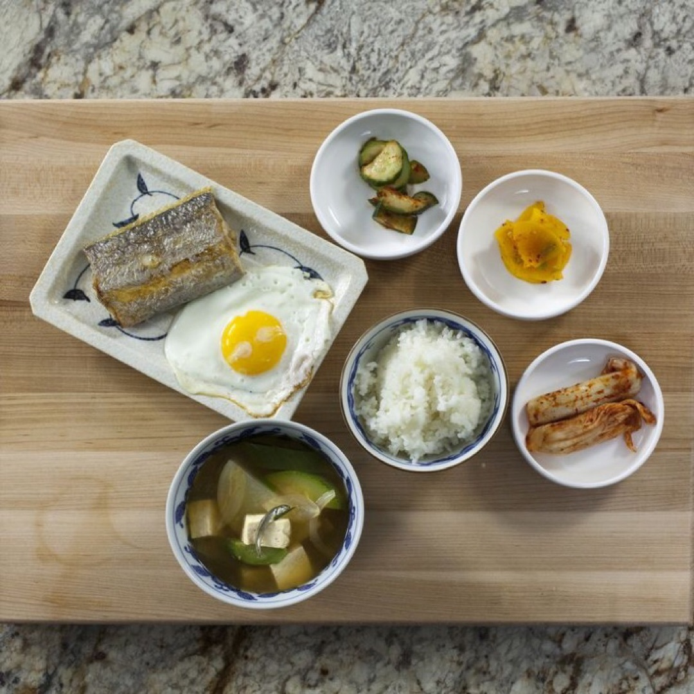
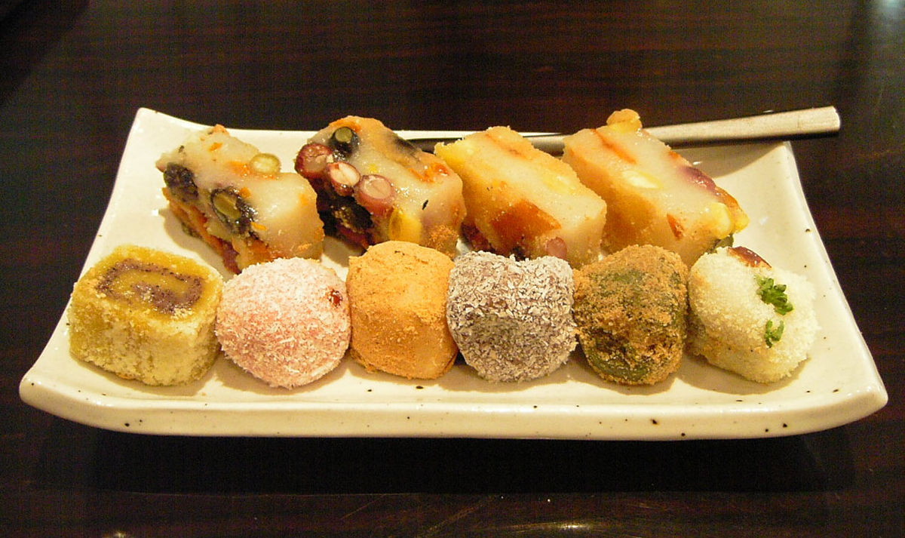

Home
Japan
▼
✈ Overview
✈ Cuisine
✈ Points of Interest
Korea
▼
✈ Overview
✈ Cuisine
✈ Points of Interest
Italy
▼
✈ Overview
✈ Cuisine
✈ Points of Interest
France
▼
✈ Overview
✈ Cuisine
✈ Points of Interest
Contact
About
Korea's Cuisine
Korean food is some of the healthiest on earth, with an emphasis on vegetables, meats cooked simply and without much oil, and a
near obsession with the fermented vegetable kimchi, which can be something of an acquired taste for non-Koreans.
Meal
Food
Picture
Breakfast
Rice
Soup
Eggs
Tofu

Lunch
Kimbap
Noodles
Rice
Deep Fried Squid
Dinner
Bulgogi
Dakgangjeong
Hot Pot
Soup
Tteok Bokki
Dessert
Tteok
Rice Cake
Shaved Ice
Red Bean Jelly
Sugar Candy
